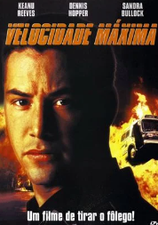
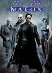

Keanu Charles Reeves (Beirute, 2 de setembro de 1964) é um ator naturalizado canadense. Nascido em Beirute e criado em Toronto, Reeves começou a atuar em produções teatrais e em filmes de televisão antes de fazer sua estreia no cinema em "Youngblood (Veia de Campeão de 1986)". Teve seu papel de destaque na comédia de ficção científica "Bill & Ted's Excellent Adventure (1989)" e reprisou seu papel em suas sequências. Ele ganhou elogios por interpretar um traficante no drama independente "My Own Private Idaho (1991)" e se estabeleceu como um herói de ação com papéis principais em "Point Break (1991)" e "Speed (1994)".
Após vários fracassos de bilheteria, a atuação de Reeves em "The Devil's Advocate (1997)" foi bem recebida. O maior estrelato veio por interpretar o personagem Neo, na franquia de "The Matrix (1999)". Interpretou John Constantine no filme "Constantine (2005)" e estrelou o drama romântico "The Lake House (2006)", no thriller de ficção científica "The Day the Earth Stood Still (2008)"" e o filme policial "Street Kings (2008)". Após outro período comercialmente baixo, Reeves fez um retorno bem-sucedido ao interpretar um assassino em "John Wick (2014)", além de dirigir "Man of Tai Chi" no ano anterior.
Foi um dos fundadores da banda de rock alternativo Dogstar, onde integra como baixista, e, fora da música, e da atuação, também atua em outras atividades como escrita, e trabalhos de caridade.
Em 2022, a revista Time o reconheceu como um dos 100 artistas mais influentes do mundo.
Biografia
Nascido em Beirute, no Líbano, é filho da figurinista e performer britânica Patricia Taylor e do geólogo sino-americano Samuel Nowlin Reeves Jr.
Seu nome de batismo foi dado em homenagem a um tio bisavô e tem significado poético: Keanu significa "Brisa fresca sobre as montanhas" ou, numa tradução mais fiel ao havaiano "a Brisa". Além da irmã chamada Kim, Keanu tem duas meias-irmãs. Uma é Karina, filha do terceiro casamento de Patricia com Robert Miller. A outra é Emma, filha de um outro relacionamento de Samuel Reeves.
Antes de ser figurinista, sua mãe Patricia Taylor era dançarina e performer num clube noturno no Líbano quando conheceu Samuel. Os dois se casaram rapidamente e de forma impulsiva. Samuel Reeves viajava muito a trabalho e, após uma de suas muitas viagens aos Estados Unidos, não voltou mais ao Líbano, caracterizando o abandono do lar. O casamento de Patricia Taylor e Samuel Reeves estava terminado, mas Samuel ainda manteve algum contato com Keanu e Kim durante a infância e depois não deu mais notícias. A família só veio a saber dele quando Keanu já era adulto e famoso. Samuel cumpriria 2 anos de uma sentença de 10 na prisão em 1992 por vender heroína num aeroporto do Hawai, nos Estados Unidos.
Keanu teve experiências diferentes dadas pelos vários pais que entraram na família Reeves. Em 1969 Patricia, Keanu e Kim deixaram o Líbano e mudaram-se para Nova Iorque, em busca de um recomeço. Patricia casou-se uma segunda vez com Paul Aaron, diretor na Broadway, e foram então para Toronto, no Canadá, onde adquiriram a cidadania canadense. O casamento durou apenas um ano e não tiveram filhos, mas até hoje Paul Aaron continua sendo a figura paterna escolhida por Keanu. O ator cresceu nessa cidade. Patricia teria mais dois casamentos: um com um promotor de rock, Robert Miller, pai de Karina, meia-irmã, e depois com um dono de um salão de cabeleireiros, Jack Bond. Ela deixou o ofício de dançarina, tornou-se costureira e logo evoluiu para figurinista. Fez disso sua profissão de sucesso, criando figurinos para artistas como Dolly Parton, Emmylou Harris, e David Bowie. Nessa época, Patricia trabalhava muito para manter os filhos e por diversas vezes os deixava com amigos e com babás. Um desses amigos foi o roqueiro Alice Cooper que, durante um tempo, morou na casa de Patricia. Contou que Keanu, em criança, não se assustava com os tipos estranhos que andavam por sua casa, que adorava ver os ensaios da banda e ficava batendo as mãozinhas no baixo para ouvir o som. Cooper também revelou que muitas vezes se juntava a Keanu para assustar a empregada, fazendo vômito falso.
Hóquei no gelo, e teatro eram seus interesses reais. Keanu jogava como goleiro e era tão bom que o seu apelido era “a parede”, porque nada passava por ele. Keanu foi eleito o jogador mais importante da equipe e em certo ponto até quis seguir carreira na liga oficial. Não conseguia adaptar-se à escola. Não era um aluno ruim, mas nunca se destacava em nenhuma matéria, e sofria por ser disléxico, transtorno com o qual só foi conseguir lidar já adulto. Também tinha dificuldades em se relacionar com colegas e professores.
Carreira
Início
Frequentou a Escola de Artes de Toronto, mas foi expulso antes de terminar o curso. Aos 19 anos entrou no “Leah Posluns”, uma escola de teatro da comunidade. Nessa escola conseguiu o seu primeiro papel no teatro, Wolfboy, em 1984, sendo sua estreia profissional no palco. A peça era extremamente forte e audaciosa para a época, com as fotos de Keanu e outro ator em poses mais do que provocantes, que se tornaram sensação em Toronto. Dois anos depois, o diretor Rob Lowe chegou ao Canadá para filmar "Youngblood" (1986), drama sobre hóquei.
Chegou a Hollywood, Los Angeles, Califórnia em 1986, com apenas 3 000 dólares no bolso. Foi para a casa de seu ex-padrasto Paul Aaron. Nesse mesmo ano, após conseguir o papel de um jovem rebelde no filme "Juventude Assassina" (River's Edge - 1986), Reeves chamou a atenção de diretores e críticos por seu desempenho. Em 1988, teve um grave acidente de moto, quebrando várias costelas. Com a carreira a deslanchar e ganhando muito dinheiro, Keanu passou a cultivar a sua paixão por motocicletas.
Como sempre aparentou menos idade, apesar dos 25 anos, continuava com cara de adolescente, seguia atuando em filmes juvenis, embora já estivesse cansado de os interpretar. Keanu queria partir para filmes que tivessem personagens de sua própria idade. Reeves tornou-se o queridinho dos filmes adolescentes alternativos dos anos 1980. Um dos mais famosos personagens é o ,strong>Theodore Logan, o Ted, dos dois filmes da série "Bill e Ted". Durante algum tempo, foi confundido com o jeito do personagem, logo a seguir veio "Parenthood". Foi durante esse período que conheceu River Phoenix, que viria a se tornar seu melhor amigo.
Ao longo da carreira, trabalhou com alguns diretores e atores que integravam o "brat pack" (geração que fez sucesso na época como Rob Lowe, Robert Downey Jr., Kiefer Sutherland, Patrick Swayze), mas não pertenceu ao "brat pack".
Keanu Reeves é conhecido por agir sempre fora dos padrões e, seguindo seu coração, comprometeu-se a fazer um projeto de sonho: "Hamlet", de Shakespeare. Foi uma produção pequena, na cidade de Winnipeg, no Canadá. A peça foi dirigida por Lewis Baumander, com vários atores desconhecidos. Os ingressos para a peça esgotaram-se em questão de poucos dias, com fãs vindo de todos os lugares do mundo (um enorme grupo vindo do Japão surpreendeu a imprensa com sua devoção a Keanu), tornando a peça uma atração turística na cidade. Críticos de todo o país e da Inglaterra também foram a Winnipeg ver Keanu. Um dos mais respeitados críticos de teatro da Inglaterra, Roger Lewis, disse que Keanu foi um dos três melhores Hamlets que ele já vira: "Keanu personificou a inocência, a fúria esplêndida, a graça animal e a violência emocional que compõem o Príncipe da Dinamarca. Ele é um dos três melhores Hamlets que já vi, por uma simples razão: ele é Hamlet".
Num filme, que nunca chegou a ser produzido, Keanu faria o papel de um morador de rua que ganharia na loteria. Para isso, procurou ver como realmente era a vida dessas pessoas. Com US$ 20,00 e uma escova de dentes foi literalmente morar nas ruas de Los Angeles. "Na primeira noite, eu estava apavorado, pois ouvia outros sem-tetos gritando enquanto dormiam ou conversando entre si sobre roubar meu papelão". Keanu ficou nas ruas até o quarto dia, quando foi reconhecido e fotografado. A história foi toda deturpada e muito se comentou sobre a "decadência" do ator. Logo depois revelou a sua identidade ao grupo de sem-abrigo com quem conviveu. Chegou a levá-los para jantar, ficando espantado quando, em vez de lagosta e champanhe, seus "companheiros pediram para ir ao Mc Donald’s". Já em 1997, um fato deixou a imprensa e os fãs estarrecidos. Um grupo de turistas japoneses que visitavam Los Angeles fotografaram Keanu embriagado e sentado na sarjeta, dividindo uma garrafa de bebida alcoólica com um mendigo. Ninguém entendeu e essas imagens correram o mundo. Os assessores de Keanu trataram desde logo de esclarecer, dizendo que ele estava fazendo pesquisa para um filme que iria fazer. Não disseram para que filme seria, nem se o papel aconteceu. E ele também não tocou no assunto.
Em 1995, constou na lista da revista People como uma das 50 pessoas mais lindas do mundo; já em 1999, ficou na 27.ª posição, na revista Empire, na lista das 100 maiores estrelas cinematográficas de todos os tempos.
Speed
Keanu demonstrou o seu real potencial ao lado de Sandra Bullock, em "Speed" (Velocidade Máxima), grande sucesso no mundo (121 milhões de dólares) de bilheteira. Aceitou o papel nesse filme, vindo de um diretor desconhecido com a premissa: um agente de polícia tem que impedir que um ônibus ande abaixo de certa velocidade pelas ruas de Los Angeles, ou ele explode. Não parecia um sucesso de jeito nenhum e muitos em Hollywood se referiam a ele como o "filme do ônibus". Keanu ainda quase matou os produtores do filme, que o queriam com o visual de "Point Break", sendo que ele estava com os cabelos quase nos ombros, e a dias do início das filmagens apareceu com a cabeça quase rapada. Ele dizia que não havia policiais da SWAT com cabelos compridos. Os produtores queriam uma peruca, a qual ele nunca colocou. O diretor, então, convenceu os produtores que em duas semanas aquele cabelo cresceria um pouco... Fez todas as cenas em "Speed", dispensando dublês - A cena em "Speed", do salto do Jaguar para o ônibus, e a cena dele de baixo do ônibus, foi ele próprio que a fez.
Na noite de 30 de Outubro de 1993, quando estava a gravar "Speed", recebeu a notícia da morte de River Phoenix, devido a uma overdose em frente ao Clube Viper Room (que era do ator Johnny Depp na época). Keanu, ao contrário de muitos amigos de River, recusou-se a falar sobre o caso e a fazer homenagens a River Phoenix. Não foi ao velório ou ao enterro. Quando não tinha saída, dizia apenas "foi um choque terrível e um acidente – não consigo entender como aconteceu". O diretor de "Speed', Jan de Bont, reorganizou o calendário de filmagens para acomodar os sentimentos de Keanu sem ter que parar totalmente de rodar, mantendo-o trabalhando de forma a esquecer um pouco do trágico evento. Tempos depois Keanu diria: "Tudo o que posso dizer é que eu nunca senti nada como aquilo na minha vida. Foi muito triste, mais do que isso, eu chorava por horas a fio".
Os produtores queriam uma sequência para "Speed". A sequência para o megassucesso seria no mar, em um transatlântico controlado por um assassino terrorista. Sandra Bullock estaria ao seu lado novamente e o salário oferecido era astronômico e digno dos grandes astros da época, Mas Keanu recusou a oferta, pois não gostou do roteiro. Numa entrevista, declarou: "qual a velocidade que um transatlântico [em velocidade baixa] daquele tamanho anda? Não seria mais fácil todo mundo pular na água então?". Foi chamado de todos os nomes pejorativos possíveis em Hollywood, de "prima-donna" a "burro", mas nada o fez voltar atrás em sua decisão. Ironicamente, hoje há quem sustente que a recusa de Keanu Reeves foi a melhor manobra de sua carreira, já que o filme foi considerado uma das piores bombas (as chamadas "box office bombs") cinematográficas já produzidas; caso ele tivesse aceito a oferta, o papel poderia ter arruinado sua carreira.
Matrix
Keanu voltou ao papel principal romântico em "A Walk in the Clouds" (Caminhando nas Nuvens). Também deixou de trabalhar com Al Pacino e Robert De Niro em "Heat" (Fogo contra Fogo). Entre 1996 e 1997, sofreu um acidente de moto e retornou com visual meio desleixado em "Chain Reaction" (Reação em Cadeia) e, em 1997, finalmente dividiu as telas com Al Pacino, no suspense "The Devil's Advocate" (O Advogado do Diabo). Na ficção, com Johnny Mnemonic, teve resultado pífio. Já em "Matrix", ganha um dos maiores destaques em 1999, onde interpreta um líder na revolta social contra computadores, que deu a ele o grande retorno na cinematografia, assim como nas sequências, em 2003, "The Matrix Reloaded" e "The Matrix Revolutions". Atuou em praticamente todas as cenas de "Matrix", dispensando dublês e arrancando elogios de mestres de kung-fu, como de seu treinador Yuen Wo Ping, e do ator Colin Chou, que interpretou o personagem Seraph, e pratica artes marciais desde pequeno.
Em 2006, 12 anos depois de atuarem juntos em "Speed", Keanu volta às telonas com a atriz Sandra Bullock em "The Lake House" (A Casa do Lago), dirigido por Alejandro Agresti. Foi um grande sucesso, principalmente no Japão.
Keanu voltou a interpretar Neo em "The Matrix Resurrections", lançado em 2021.
Projetos
Keanu faz parte do elenco do filme "The Neon Demon" (O Demônio de Neon), junto com Elle Fanning, Sophie Simmons, e Bella Heathcote. Eles participaram da première do filme em Los Angeles, no dia 14 de junho de 2016.
Depois de muitos anos gravando poucos filmes e a maioria independentes, Keanu voltou a realizar projetos em Hollywood. Entre 2016 e 2017, estreia cerca de 8 filmes em que Keanu participa, seja atuando ou apenas dublando. Ele também confirmou que a terceira aventura de "Bill & Ted's Excellent Adventure" estava em pré-produção, com roteiro já aprovado. "Bill & Ted Face the Music", teve sua estreia no Brasil em 5 de novembro de 2020.
Reeves é um aficcionado por motocicletas, e em parceria com o customizador Gard Hollinger, fundou em 2011, a Arch Motorcycle Company, que atua na personalização e venda de motocicletas custom da Harley-Davidson.
E para celebrar outras formas de arte, Keanu Reeves revela seu lado escritor e nos apresenta dois livros em parceria com a ilustradora e fotógrafa Alexandra Grant. O primeiro chama-se “Ode to Hapiness”, um livro de poesia ilustrada lançado em 2011. E o segundo, “Shadows”, de 2016, é um livro de fotos com texto. As sombras são o resultado artístico de uma sessão de fotos tiradas de expressões corporais de Keanu. Os dois livros foram lançados pela Steidl Verlag, que é uma editora alemã cujos livros de arte são bastante cobiçados no mercado. “Ode to Hapiness” teve uma tiragem inicial limitada que esgotou-se rapidamente. Não há previsão de novas edições para esse título, que alcançou assim um status de raridade no mercado.
Vida Pessoal
Teve um relacionamento com a assistente de produção e atriz Jennifer Syme, que era assistente de produção do cineasta David Lynch. O relacionamento era mantido com muita discrição por ambos. Ela engravidou do ator e se separaram antes do nascimento da bebê, que morreu ainda no ventre da mãe. Cerca de um ano após o rompimento, Jennifer sofreu um acidente de carro e morreu. Reeves ficou abalado, prestou condolências e compareceu ao funeral, mas sempre manteve a discrição em relação ao assunto.
Reeves apoia diversas causas e instituições de caridade. Em resposta à batalha de sua irmã contra a leucemia, criou uma fundação privada de combate ao câncer, que presta auxilio a hospitais infantis, e promove pesquisas sobre o câncer.
Após as filmagens de "John Wick 4", Reeves, juntamente com Chad Stahelski, e o instrutor de jiu-jitsu brasileiro Dave Camarillo, autografaram um uniforme de treinamento que foi posteriormente leiloado para arrecadar dinheiro para o St. Jude Hospital, um centro de pesquisa e tratamento de câncer pediátrico em Memphis, no Tenessee.
Em 2003, passou a morar em Hollywood, Califórnia, e em 31 de janeiro de 2005, recebeu sua estrela na Calçada da Fama de Los Angeles.
Viveu em hotéis na década de 1990, andando de moto, e tocando em sua banda grunge, Dogstar.
Em novembro de 2019, tabloides noticiaram rumores sobre um suposto relacionamento entre Reeves e a artista visual Alexandra Grant. Reeves é conhecido por manter sua vida pessoal longe dos holofotes, no entanto, o casal assumiu publicamente a relação durante o evento LACMA Art + Film Gala, em Los Angeles.
Filmologia
| Ano | Título | Papel |
|---|---|---|
| 1985 | Começar de Novo | Stereo Teen #1 |
| 1985 | One Step Way | Ron Petrie |
| 1986 | Veia de Campeão | Heaver |
| 1986 | Voando para o Sucesso | Tommy |
| 1986 | Jovem de Novo | Mike Riley |
| 1986 | Aparências | Eddie Talbot |
| 1986 | Sindicato da Violência | Buddy Martin |
| 1986 | Juventude Assassina | Matt |
| 1986 | A Irmandade da Justiça | Derek |
| 1986 | Babes in Toyland | Jack |
| 1988 | Para Sempre na Memória | Chris Townsend |
| 1988 | O Príncipe da Pensilvania | Rupert Marshetta | 1988 | Uma Noite Muito Louca | Winston Connelly |
| 1988 | Ligações Perigosas | Le Chevalier Raphael Danceny |
| 1989 | Bill & Ted - Uma Aventura Fantástica | Ted "Theodore" Logan |
| 1989 | O Tiro Que Não Saiu Pela Culatra | Tod Higgins |
| 1990 | Te Amarei Até te Matar | Marlon James |
| 1990 | Tia Júlia e o Escrevinhador | Martin Loader |
| 1991 | Caçadores de Emoção | Agente do FBI Johnny Utah |
| 1991 | Bill & Ted - Dois Loucos no Tempo | Ted "Theodore" Logan |
| 1991 | Garotos de Programa | Scott Favor |
| 1991 | Providence | Eric |
| 1992 | Drácula de Bram Stoker | Jonathan Harker |
| 1993 | Muito Barulho por Nada | Don John |
| 1993 | O Pequeno Buda | Príncipe Siddhartha | 1993 | Sem medo no Coração | Homem sem-teto |
| 1993 | Freaklândia - O Parque dos Horrores | Ortiz the Dog Boy |
| 1993 | Até as Vaqueiras Ficam Tristes | Julian Gitche |
| 1994 | Velocidade Máxima | Oficial Jack Traven |
| 1995 | Johnny Mnemonic - O Cyborg do Futuro | John "Johnny" Smith |
| 1995 | Caminhando nas Nuvens | Paul Sutton |
| 1996 | Reação em Cadeia | Eddie Kasalivich |
| 1996 | Paixão Bandida | Jjaks Clayton |
| 1997 | Sem Limite | Harry |
| 1997 | Advogado do Diabo | Kevin Lomax |
| 1999 | Matrix | Thomas Anderson/Neo |
| 1999 | Me and Will | Ele mesmo |
| 2000 | Virando o Jogo | Shane Falco |
| 2000 | O Observador | David Allen Griffin |
| 2000 | O Dom da Premonição | Donnie Barksdale |
| 2001 | Doce Novembro | Nelson Moss |
| 2001 | Hardball - O Jogo da Vida | Conor O'Neill |
| 2003 | Matrix Reloaded | Thomas Anderson/Neo |
| 2003 | Animatrix | Thomas Anderson/Neo |
| 2003 | Matrix Revolutions | Thomas Anderson/Neo |
| 2003 | Alguém Tem Que Ceder | Dr. Julian Mercer |
| 2005 | Constantine | John Constantine |
| 2005 | Impulsividade | Perry Lyman |
| 2005 | Ellie Parker | Ele mesmo |
| 2006 | Casa do Lago> | Alex Wyler |
| 2006 | O Homem Duplo | Bob Arctor |
| 2008 | Os Reis da Rua | Detetive Tom Ludlow |
| 2008 | O Dia em que a Terra Parou | Klaatu |
| 2009 | A Vida Íntima de Pippa Lee | Chris Nadeau |
| 2011 | A Ocasião Faz o Ladrão | Henry Torne |
| 2013 | Sem Destino | John |
| 2013 | Os 47 Ronins | Kai |
| 2013 | O Homem do Tai Chi | Donaka Mark |
| 2014 | John Wick: De volta ao jogo | John Wick |
| 2015 | Bata Antes de Entrar | Evan Webber | 2016 | Keanu, Cadê Meu Gato? | Keanu (Voz) |
| 2016 | Filha de Deus | Detetive Scott Galban |
| 2016 | O Demônio de Neon | Hank |
| 2016 | Versões de Um Crime | Richard Ramsay |
| 2017 | John Wick: Um Novo Dia Para Matar | John Wick |
| 2017 | O Mínimo Para Viver | Dr. William Beckham |
| 2017 | Replicas | Will Foster |
| 2017 | Amores Canibais | The Dream |
| 2018 | Siberia | Lucas Hill |
| 2018 | Com quem será? | Frank |
| 2019 | John Wick 3 - Parabellum | John Wick |
| 2019 | Meu Eterno Talvez | Ele mesmo |
| 2019 | Toy Story 4 | Duke Caboom (Voz) |
| 2020 | Bill & Ted: Encare a Música | Ted "Theodore" Logan |
| 2020 | Bob Esponja: O Incrível Resgate | Sage |
| 2021 | Matrix Resurrections | Thomas Anderson / Neo |
| 2022 | DC Liga dos Super Pets | Batman (Voz) |
| 2023 | John Wick 4: Baba Yaga | John Wick |
| 2024 | Sonic 3 - O Filme | Shadow, o Ouriço (Voz) |
| 2025 | John wick: Ballerina | John Wick |
Premiações
- Recebeu 2 indicações ao MTV Movie Awards de melhor ator, por Speed (1994) e Matrix (1999). Venceu em 1999.
- Recebeu 2 indicações ao MTV Movie Awards de o mais bonito, por Point Break (1991) e Speed (1994). Venceu em 1991.
- Recebeu 3 indicações ao MTV Movie Awards de melhor beijo, por Speed (1994), A Walk in the Clouds (1995) e Matrix Reloaded (2003).
- Recebeu 2 indicações ao MTV Movie Awards de melhor luta, por Matrix (1999) e Matrix Reloaded (2003). Venceu em 1999.
- Recebeu 2 indicações ao MTV Movie Awards de melhor equipe, por Speed (1994) e Matrix (1999). Venceu em 1994.
- Ganhou o Prêmio Bravo Otto (Alemanha) de Melhor Ator em 1994.
- Recebeu 3 indicações ao prêmio cinematográfico humorístico "Framboesa de Ouro" por Johnny Mnemonic (1995), Chain Reaction (1996) e Hardball (2001).
- Recebeu 2 indicações ao prêmio cinematográfico humorístico "Framboesa de Ouro" por Much Ado About Nothing (1993) e The Watcher (2000).
- Ganhou no ano de 2000 o prêmio Golden Slate de Melhor Ator de Papel Principal, por Matrix (1999).
- Ganhou o Teen Choice Awards de melhor beijo por The Lake House (2006).
- Ganhou o Prêmio Bambi Awards de Melhor Ator Internacional (2008).
- Ganhou o Prêmio Taurus Honorary Award de Melhor Astro de Filmes de Ação (2004).
- Foi o convidado de honra da 41ª Edição do Festival do Filme Americano de Deauville, na qual foi homenageado pela contribuição que o conjunto de sua obra deu ao cinema (2015).